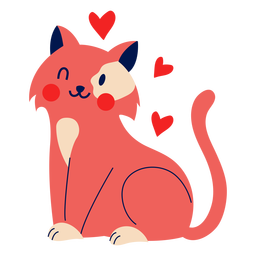

VETERINÁRIO EM DOMICÍLIO
ChloeVet
Médicos veterinários de confiança e procedimentos desenvolvidos com carinho visando o bem-estar do seu bichinho, feito através de um atendimento domiciliar.
Agende sua visita
Solicite uma consulta em casa agora mesmo! Atendemos de domingo à domingo até às 22h, após esse horário somente para clientes cadastrados. Agende pelo telefone, WhatsApp ou em nosso site
AGENDE PELO WHATSAPP
Regiões atendidas
Quer solicitar os nossos serviços para garantir a saúde e a felicidade do seu melhor amigo? Nossos serviços estão sempre disponíveis nas principais regiões de:
São Paulo:
AGENDE PELO WHATSAPP"
Matheus
Dono da Chloe (Gata)
"A melhor parte de poder contar com um veterinário à domicílio, é que nosso pet fica à vontade. Dessa forma não causa nenhum desconforto ou insegurança, assim nosso bichinho fica sempre bem."
"
Leticia
Dona da Maria (Cachorra)
"Sempre que precisei de um veterinário de confiança optei por contar com a ChloeVet, que pode me atender aqui em casa e tratar com o carinho e a atenção que o minha cachorrinha precisa."